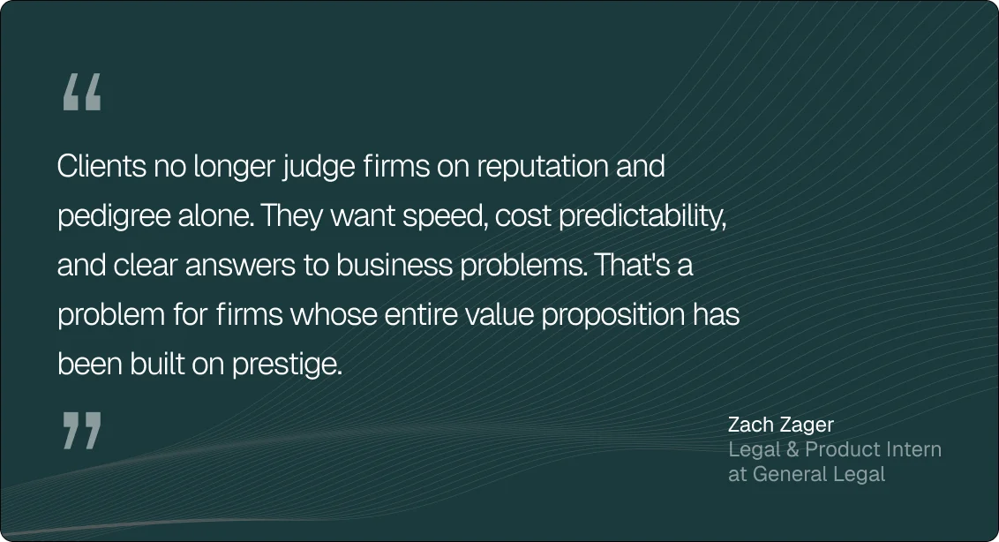

An AI-native law firm is a legal practice that uses artificial intelligence as a core part of its operations, workflows, and client services.
Right now, the model is rare enough to fit onto one spreadsheet. As of late July 2026, the AI Firm Index tracks just 57 AI-native law firms worldwide, concentrated in the US (58%) and the UK (16%).
Though the category might be new, the strain behind it is far from it.
For years, the legal industry has faced a growing tension between client demand for more efficient work and a business model centered on human labor and billable hours. While generative AI didn’t start that debate, it forced the industry to confront it.
Now, 93% of law firms expect this technology to become a central part of their organization’s workflow within the next five years, according to the 2025 Generative AI in Professional Services Report by the Thomson Reuters Institute.
This guide focuses on the firms built around AI from day one, covering what an AI-native law firm is, how the model emerged, how it operates, and why businesses are increasingly drawn to it.
Key takeaways
- AI-native law firms are built differently
They design their workflows, pricing, and operations around AI from day one rather than adding AI to a traditional law firm model. - Lawyers still play a central role
AI handles much of the production work, but experienced attorneys remain responsible for legal advice, judgment, and outcomes. - The main benefits are speed, cost, and predictability
AI-native firms can often deliver work faster, reduce costs, and provide clearer pricing than traditional law firms. - They can handle far more than contract reviews
Many AI-native firms now support employment, corporate transactions, intellectual property, compliance, disputes, and other business legal matters. - General Legal brings the model into practice
General Legal combines experienced attorneys, legal operators, and former Casetext AI builders to help startups and growth-stage companies access fast, transparent, and scalable legal support.
What is an AI-native law firm?
An AI-native law firm is a law firm that uses artificial intelligence as a foundational component of legal work, designing its processes, playbooks, team structures, and technology stacks with AI in mind from day one.
That’s an important distinction because many law firms now use AI in some capacity. In most cases, however, those tools have been layered onto a traditional operating model where lawyers remain the primary engine of production, and AI serves only as an accelerator.
Thanks to their fundamentally different operating models, AI-native firms are treated as a distinct category of law firms. Depending on who you ask, you might also hear terms like AI-first law firm, new model law firm (NewMod), or simply neofirm. The terminology is still evolving because the category itself is yet to fully mature.
When did the first AI-native law firms emerge?
The first AI-native law firms emerged when advances in artificial intelligence finally aligned with growing demand for faster, more predictable legal services.
The first major regulatory endorsement arrived in May 2025, when the Solicitors Regulation Authority authorized Garfield.Law as the first law firm permitted to deliver regulated legal services through AI-powered systems. This approval marked a turning point for the industry, signaling that regulators were willing to accommodate AI-native firms within existing legal frameworks.
Just a few months later, in September 2025, Eudia launched Eudia Counsel under Arizona’s Alternative Business Structure (ABS) framework, describing it as the world’s first AI-augmented law firm. The launch demonstrated that regulatory innovation in the US was creating room for new legal business models that combined licensed attorneys with AI-driven execution.
This new legal business model was made possible by two factors. The first was client demand.
Companies increasingly wanted legal services delivered with the same speed, transparency, and predictability they expected from the rest of their software stack, and AI made those expectations economically viable.

The second factor was access to capital.
Unlike traditional law firms, AI-native firms can invest heavily in legal engineering, automation, and proprietary systems. Some have attracted significant outside funding as investors bet on a model capable of delivering legal services with greater efficiency and scalability.
One example is General Legal, which raised $11.5 million within just three months of launch to accelerate the development of its AI-native platform and service model.
But what does that model look like in practice?
How does an AI-native law firm work?
Most AI-native law firms follow a similar structure built around three core components: the technology, the lawyers, and the clients.
The technology: Where the work begins
AI is the technological foundation of the AI-native model. It’s typically involved in every stage of legal work, including:
- Reviewing contracts and identifying potential risks
- Summarizing documents and extracting key provisions
- Comparing versions and tracking changes
- Conducting legal and regulatory research
- Drafting first versions of contracts, policies, and other legal documents
- Analyzing large volumes of information during due diligence and compliance reviews
- Routing matters, organizing knowledge, and supporting internal workflows
These capabilities are powered by large language models (LLMs), but they are often combined with proprietary workflows, knowledge bases, and specialized legal tools. The result is software that can perform substantive legal tasks in minutes rather than hours.
More importantly, these systems are becoming increasingly accurate and capable.
For example, Lawhive’s AI assistant, Lawrence, scored 81% on the Solicitors Qualifying Examination—the standardized exam used to qualify solicitors in England and Wales—which is well above the 55% pass threshold. This score suggests that modern AI systems can perform legal analysis at a level comparable to a paralegal or junior lawyer.
This level of performance also challenges a common misconception that AI-native law firms just use chatbots to answer legal questions.
In reality, the technology is embedded throughout the firm’s operations, powering everything from legal tasks to workflow automation. Some firms do offer client-facing assistants, such as General Legal’s Clerk AI, but those tools represent only a small part of the overall system.
The lawyers: Where judgment comes in
Despite the heavy use of technology in AI-native law firms, lawyers remain responsible for the advice, decisions, and outcomes delivered to clients. Their role typically includes:
- Interpreting legal and commercial risk
- Making judgment calls AI can’t make reliably
- Validating AI-generated work
- Advising clients on strategy and tradeoffs
- Taking responsibility for the final product
In a sense, these lawyers can be compared to law firm partners overseeing a highly capable team of associates. The exact number of these lawyers varies significantly across AI-native firms.
Some firms operate with small teams of fewer than 10 attorneys, while others have built large partner-led organizations with more than 100 lawyers. What matters more is the type of lawyer being hired.
The leading AI-native firms favor experienced practitioners over junior associates. These are often lawyers with years of Big Law or in-house experience who can evaluate AI outputs, exercise independent judgment, and work comfortably alongside technology. Many are also drawn to the model itself, viewing AI as a way to amplify expertise rather than replace it.
In return, AI-native firms offer a different work environment.
By using AI to handle much of the production work and coordinate matters throughout the firm, lawyers can spend less time on repetitive tasks and late-night document reviews. As a result, they typically enjoy more predictable hours and experience a better quality of life than traditional firm environments, which allows them to maintain greater focus on high-value work.
The clients: Where value is delivered
AI-native law firms are typically designed to fit into existing workflows rather than forcing clients into traditional law firm processes. Instead of scheduling calls, managing long email chains, or waiting days for updates, clients can often submit work, track progress, and communicate with their legal team through the channels they already use.
For example, at General Legal, clients can send contracts and legal requests through Slack, email, or the firm’s client portal. The firm then provides scope, pricing, and turnaround times upfront, creating a workflow that feels closer to a modern software service than a traditional legal engagement.

These differences offer a glimpse into why an increasing number of businesses are choosing AI-native law firms over traditional legal providers.
Why businesses choose AI-native law firms: 6 key benefits
AI-native law firms may represent a small share of the legal market, but their appeal is growing. Here are six key benefits driving that growth.
1. They move faster
Traditional law firms are limited by human capacity. That’s why work often sits in inboxes until a lawyer has time to pick it up, creating delays that have little to do with the complexity of the matter itself.
AI-native firms remove much of that waiting.
For example, a Master Services Agreement (MSA) that typically requires 8–10 hours of lawyer time can be reviewed in a little over 2 hours using an AI-assisted workflow. As a result, contract reviews that once took days can often be delivered the same day.
2. They cost less
The cost of legal services has become a major barrier to access. According to the Legal Services Corporation, nearly half of Americans who don’t seek legal help cite cost as a reason, and more than half doubt they could afford a lawyer if they needed one.
AI-native law firms address this problem by replacing much of the junior-associate work that traditionally drives legal bills. Rather than paying for hours of manual review, clients benefit from technology-assisted workflows that reduce labor costs while keeping experienced lawyers involved in the final work product.
3. They offer more predictable pricing
Many businesses can budget for legal expenses. What they struggle to budget for are surprises. In traditional law firms, matters are often billed by the hour, making it difficult to know the final cost until the invoice arrives.
AI-native firms tend to take a different approach, using fixed fees or automated quotes that provide clarity upfront.
General Legal goes a step further and publishes an extensive list of services and prices on its website. Even when custom pricing is required, clients typically receive a quote before work begins.

4. They’re easier to work with
New matters can require calls, email chains, intake forms, conflict checks, engagement letters, and other administrative steps before substantive work even begins.
AI-native firms are designed to reduce that friction by:
- Automating onboarding workflows
- Allowing clients to submit requests through tools they already use like Slack
- Reducing back-and-forth communication through standardized workflows
- Providing faster status updates and matter tracking
- Starting work immediately after submission rather than waiting for manual triage
5. They deliver more consistent service
Traditional legal services can vary significantly depending on which lawyer handles a matter, how much experience they have, and what knowledge they happen to possess.
AI-native firms minimize that variability by embedding legal expertise into systemized workflows, playbooks, and AI systems and applying them consistently to every matter. This creates a more repeatable service model where clients receive the same level of attention regardless of who is assigned to the work.
As for the work itself, most AI-native law firms are capable of handling far more than routine contract review.
Which legal services can AI-native law firms handle?
Most AI-native firms offer many of the same legal services as traditional law firms. Some of them focus on a single practice area; others have expanded into broader legal disciplines as their technology and operating models have matured.
The AI Firm Index currently identifies 10 distinct legal service categories offered by AI-native law firms:
Instead of organizing themselves around a specific legal practice area, some AI-native law firms focus on serving a particular client segment, such as startups, small and medium-sized businesses (SMEs), or consumer clients. In these cases, the firm’s service offering is defined by the needs of its target customers.
Take General Legal as an example.
By focusing on startups and high-growth companies, the firm provides a broader set of legal services that reflect the day-to-day needs of venture-backed businesses, including:
- Startup formation and operational legal support
- Commercial contracts and technology transactions
- Employment and workforce matters
- Corporate and financing documents
- Data privacy and compliance
- Financial regulatory work
If you’re interested in seeing what an AI-native law firm looks like in practice, General Legal is one of the most established examples in the category.
Getting started with General Legal

Backed by Y Combinator, SV Angel, Susa Ventures, and Box Group, our firm serves more than 320 companies, ranging from early-stage startups to venture-backed businesses that have raised hundreds of millions of dollars. Our team combines experienced attorneys, legal operators, and former Casetext AI builders to deliver legal services through a model built specifically for speed, transparency, and efficiency.
This model was made possible by significant investments in the operational systems that sit behind legal work.
Every matter is triaged before it reaches an attorney, taking into account subject-matter expertise, complexity, urgency, attorney availability, and workload. The goal is simple: get the right matter to the right lawyer as quickly as possible.
The same philosophy shapes the firm’s internal culture.
Legal operations, engineering, product, client success, and attorneys work closely together to refine workflows, eliminate bottlenecks, and improve the client experience. Rather than treating operations as a support function, the firm treats it as a core part of legal service delivery.
To experience this innovative model firsthand, create an account online and start sending legal work after approval. If you’d like to learn more before getting started, our team is happy to answer any questions—just reach out via email.
FAQ
What kind of organization is an AI-native law firm?
An AI-native law firm is the kind of organization that builds its operating model around AI from day one, using technology as a core part of how legal work is staffed, delivered, and priced.
Are AI-native law firms actually law firms?
Yes. AI-native law firms are real law firms that employ qualified attorneys and operate within the same legal and regulatory frameworks as other law firms.
Can AI-native law firms provide legal advice?
Yes. Because licensed attorneys remain involved in client matters, AI-native law firms can provide legal advice and take responsibility for the work they deliver.
How are AI-native law firms different from traditional law firms?
AI-native law firms are designed around technology-enabled workflows from the start, whereas traditional firms usually add AI tools onto existing processes and business models.
How are AI-native law firms different from legal AI tools like ChatGPT?
AI-native law firms combine AI with human legal expertise. Tools like ChatGPT can generate information and draft content, but they can’t represent clients, provide legal advice, or assume professional responsibility for outcomes.
What types of legal work can AI-native law firms handle?
AI-native law firms can handle many of the same matters as traditional law firms, including contracts, employment, intellectual property, regulatory matters, and dispute-related work.
Are AI-native law firms cheaper than traditional law firms?
Often, yes. Many AI-native firms use technology to reduce the amount of manual work required, which can translate into lower fees and more predictable pricing for clients.
What are the best law firms for startups?
The best law firm for a startup depends on its stage, budget, and legal needs. AI-native law firms are an excellent choice for startups that value speed, predictable pricing, and operational efficiency.